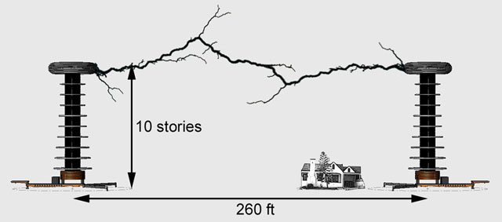
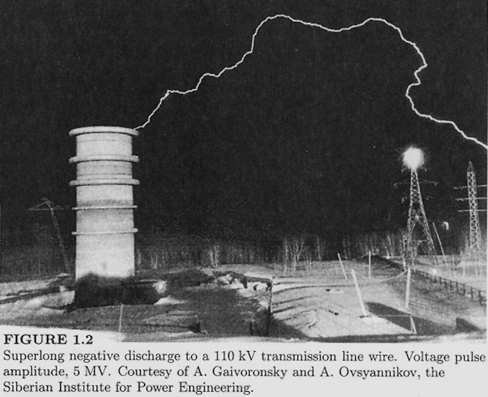
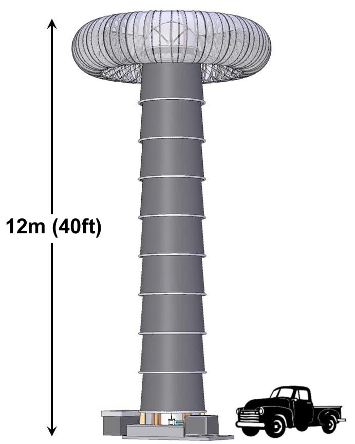
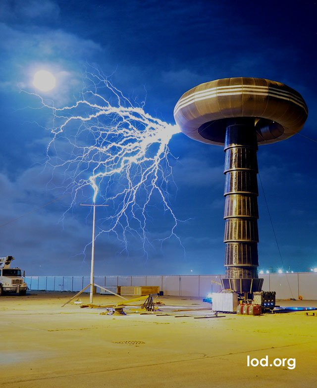

The Creation Point of Lightning. Using fast rising balloons carrying measurement gear, scientists in the 1980's discovered that the electric fields in storm clouds are far too weak to produce electrical discharges -- they're only about 5-10% of what classical electrical theory says is needed to produce electrical discharges in air.
Yet lightning strikes the Earth about 100 times every second. So what hidden trick do storm clouds use to get lightning started?
Researchers have been working on this mystery for decades. There are several promising theories [Gurevich, Zybin, Dwyer] but no conclusive evidence as of yet. These theories have never been tested of course, since waiting around with test gear in a storm cloud -- at exactly the right place and right time -- is practically impossible!
Adding to the intrigue, NASA's gamma-ray telescope recently discovered that storm clouds produce bursts of both gamma rays and anti-matter.
Our approach to this mystery is more direct -- Re-create the actual field conditions found inside storm clouds here on the ground, then purposely trigger the critical first steps of lightning.
Two 121-foot tall Tesla towers spaced about 300 feet apart are just large enough to produce the critical electric fields that start lightning inside storm clouds. Below is an elevation view of the proposed two tower system:
Each coil tower will generate 8.8 million volts, or 17.6 million volts total, producing the critical electric field strength of 200,000 volts per meter between the towers. The towers need to be at least 121ft high, to support this much voltage without flashing over the insulating structural members to ground.
Superlong Discharges. Russian researchers developing extra-high voltage transmission lines in the 1960's witnessed surprising arc-length anomalies at SIBNIIE, a high voltage research facility in Siberia. Their high voltage machines would occasionally launch arcs well beyond 100 meters in length, striking lights in the parking lot or transmission lines across the field, as shown in this photo below. By classic electrical theory, these machines should only produce electric arcs that are meters in length!
Like the creation of lightning in storm clouds, superlong discharges appear to work with only a very small fraction of the electric field strength as predicted by classical electrical theory. The 121ft twin tower system will generate over 3x the total voltage of SIBNIIE, allowing experiments that explore the nature of superlong discharges as well.
But storm clouds produce DC voltage, and the Tesla towers produce AC. How will this work?
AC voltage is really just DC voltage in motion, cycling back and forth at some rate that we call the frequency. If you take a quick snapshot of an AC voltage, it looks just like a DC voltage.
The creation process of lightning is very fast, taking place on the microsecond timescale.The Tesla tower AC voltage moves at a slow rate, so during the lightning creation event it scarcely moves at all, acting for all intents and purposes like a DC voltage. The Tesla towers produce voltage waves that are hundreds of microseconds in length, much longer than lightning creation events. In fact, the natural DC voltages inside clouds sometimes move even faster than the Tesla tower voltages!
The 121ft towers will be many times the size of the largest Tesla tower ever built. Towers of this size require specialized engineering design to handle the high voltage stresses, as well as the mechanical stresses. Many of the engineering solutions involved are novel and will need real-world testing and validation before committing to full-scale construction.
To test and refine these new ideas we've managed to scrape together the materials for a fully functional, 1:3 scale prototype of one tower. This prototype tower is about 40ft in height.
At 3 million volts and 240,000 watts, even this 1:3 scale model is the largest Tesla Tower ever built.
In order to get more operating time on the machine and raise awareness of the scientific motivations driving this project, we are hosting a series of public demos featuring the 40ft coil tower, demonstrating a range of unusual electrical effects that occur at large-scale electric field intensities. These demos will be open to the public. Click on Events link for details.
Shown below is an elevation sketch of the 1:3 prototype, and also a photo of the tower operating during a tuning test:
 © Lightning On Demand 2021